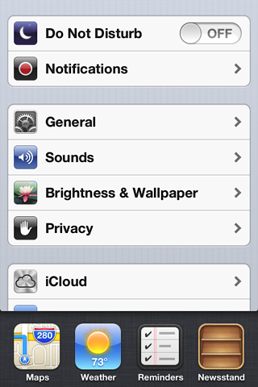
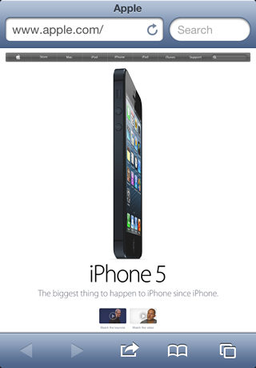

Platform Characteristics
iOS devices share several unique characteristics that influence the user experience of all apps that run on them. The most successful apps embrace these characteristics and provide a user experience that integrates with the device they’re running on.
The Display Is Paramount, Regardless of Its Size
The display of an iOS device is at the heart of the user’s experience. Not only do people view beautiful text, graphics, and media on the display, they also physically interact with the Multi-Touch screen to drive their experience (even when they can’t see the screen).
Different iOS devices can have displays of different dimensions and resolutions, but in all devices the display affects the user experience in the same ways:
44 x 44 points is the comfortable minimum size of a tappable UI element.
People are very aware of the quality of app artwork.
The display encourages people to forget about the device and to focus on their content or task.
Device Orientation Can Change
People can rotate iOS devices at any time and for a variety of reasons. For example, sometimes the task people are performing feels more natural in portrait, and sometimes people feel that they can see more in landscape. Whatever their reason for rotating the device, people expect the app to maintain its focus on the primary functionality.
People often launch apps from the Home screen, so they tend to expect all apps to start in the same orientation. Because of the different ways iPhone and iPad display the Home screen, this expectation affects apps in different ways:
On iPhone and iPod touch, the Home screen is displayed in portrait orientation only, with the Home button at the bottom. This leads users to expect iPhone apps to launch in this orientation by default.
On iPad, the Home screen is displayed in all orientations, so users tend to expect iPad apps to launch in the device orientation they’re currently using.
Apps Respond to Gestures, Not Clicks
People make specific finger movements, called gestures, to operate the unique Multi-Touch interface of iOS devices. For example, people tap a button to activate it, flick or drag to scroll a long list, or pinch open to zoom in on an image.
The Multi-Touch interface gives people a sense of immediate connection with their devices and enhances their sense of direct manipulation of onscreen objects.
People are comfortable with the standard gestures because the built-in apps use them consistently. Their experience using the built-in apps gives people a familiar set of gestures that they expect to be able to use successfully in most other apps.
Gesture | Action |
|---|---|
Tap | To press or select a control or item (analogous to a single mouse click). |
Drag | To scroll or pan (that is, move side to side). To drag an element. |
Flick | To scroll or pan quickly. |
Swipe | With one finger, to reveal the Delete button in a table-view row, the hidden view in a split view (iPad only), or the Notification Center (from the top edge of the screen). With four fingers, to switch between apps on iPad. |
Double tap | To zoom in and center a block of content or an image. To zoom out (if already zoomed in). |
Pinch | Pinch open to zoom in. Pinch close to zoom out. |
Touch and hold | In editable or selectable text, to display a magnified view for cursor positioning. |
Shake | To initiate an undo or redo action. |
In addition to these gestures, people can move the device itself to perform certain tasks. Examples of these tasks are to activate Siri (on iPhone 4S) or to calibrate the compass. People expect all these gestures to work the same, regardless of the app they’re currently running.
People Interact with One App at a Time
Only one app is visible in the foreground at a time. When people switch from one app to another, the previous app transitions to the background and its user interface goes away. This feature, called multitasking, allows apps to remain in the background until users relaunch them or until they are terminated.
Most apps enter a suspended state when they transition to the background. Suspended apps are displayed in the multitasking UI, which provides a convenient way for people to switch to recently used apps. The multitasking UI appears at the bottom of the screen, below the UI of the currently running app or the Home screen (shown here below the iPhone Settings app).

When people return to a suspended app, it can instantly resume running from the point where it went to the background, without having to reload its UI.
Some apps might need to continue running in the background while users run another app in the foreground. For example, users might want to continue hearing the song that’s playing in one app while they’re using a different app to check their to-do list or handle email.
To learn how to handle multitasking correctly and gracefully, see “Multitasking.”
Preferences Are Available in Settings
People set certain preferences for an iOS app in the built-in Settings app. They must switch away from the current app when they want to access those preferences in Settings.
Preferences in the Settings app are of the “set once and rarely change” type. Although some of the built-in apps provide preferences of this type, most apps do not need them, so they don’t have preferences in the Settings app.
Onscreen User Help Is Minimal
Mobile users have neither the time nor the desire to read through a lot of help content before they can benefit from an app. What’s more, help content takes up valuable space to store and display.
iOS devices and the built-in apps are intuitive and easy to use, so people don’t need onscreen help content to tell them how to use the device or the apps. This experience leads people to expect all iOS apps to be similarly easy to use.
Most iOS Apps Have a Single Window
An iOS app has a single window, unless it supports an external display. An app’s window fills the device’s main screen and provides an empty surface that hosts one or more views in which you present your content. It’s important to realize that a window in an iOS app is very different from a window in a computer app. For example, an iOS window has no visible components (such as a title bar or a close button) and it can’t be moved to a new location on the device display.
It’s also important to realize that most users are unaware of the windows and views in the iOS apps that they use. For the most part, users experience an iOS app as a collection of screens through which they navigate. From this perspective, a screen generally corresponds to a distinct visual state or mode in an app. In the Contacts app on iPhone, for example, users think of their contact list—regardless of its length—as one screen and an individual contact’s details as a different screen.
Two Types of Software Run in iOS
There are two types of software that you can develop for iOS devices:
iOS apps
Web content
An iOS app is an app you develop using the iOS SDK to run natively on iOS devices. iOS apps resemble the built-in apps on iOS devices in that they reside on the device itself and take advantage of features of the iOS environment. People install iOS apps on their devices and use them just as they use built-in apps, such as Photos, Calendar, and Mail.
Web content is hosted by a website that people visit using their iOS devices. There are three types of web content:
Web apps. Webpages that provide a focused solution to a task and conform to certain display guidelines are known as web apps because they behave similarly to iOS apps. A web app often hides the UI of Safari on iOS so that it looks more like a native app. Using the web clip feature, a web app can also supply an icon for people to put on the Home screen. This allows people to open web apps in the same way that they open iOS apps.
Optimized webpages. Webpages that are optimized for Safari on iOS display and operate as designed (with the exception of any elements that rely on unsupported technologies, such as plug-ins, Flash, and Java). In addition, an optimized webpage correctly scales content for the device screen and is often designed to detect when it is being viewed on iOS devices, so that it can adjust the content it provides accordingly.
Compatible webpages. Webpages that are compatible with Safari on iOS display and operate as designed (with the exception of any elements that rely on unsupported technologies, such as plug-ins, Flash, and Java). A compatible webpage does not tend to take extra steps to optimize the viewing experience on iOS devices, but the device usually displays the page successfully.
An iOS app might combine native UI elements with access to web content within a web content–viewing area (typically by using a UIWebView). Such an app can look and behave like a native iOS app, without drawing attention to the fact that it depends on web sources.
Safari on iOS Provides the Web Interface
Safari on iOS provides the interface for browsing web content on iOS devices. Although Safari on iOS is similar in many ways to Safari on the computer desktop, it is not the same.
For the most part, users can’t change the size of the viewport (the area that displays content). On the desktop, users resize the viewport when they resize the browser window. On iOS devices, the viewport doesn’t resize unless the device orientation changes. iOS users can change the scale of the viewport by zooming in and out, and they can pan the webpage. On iPad, users are much less likely to zoom web content than they are on iPhone (shown below).

Safari on iOS supports cookies. Use of cookies can streamline user interaction with web content by saving the user’s context, preferences, and previously entered data.
Safari on iOS does not support Flash, Java (including Java applets), or third-party plug-ins within web content. Instead, Safari on iOS supports the HTML5 <audio> and <video> tags to provide audio and video streaming, and JavaScript and CSS3 transforms, transitions, and animations to display animated content.
Safari on iOS interprets most gestures as targeting the way the device displays content, not the content itself. The tap—which is analogous to a single mouse click—can cause Safari on iOS to send the onclick event to a webpage. There are no analogs for other mouse-based gestures, such as hover.
Safari on iOS allows web apps to run in full-screen mode. Web apps that launch from a web clip icon on the user’s Home screen can hide the UI for Safari on iOS, so that they look more like native apps.
© 2013 Apple Inc. All Rights Reserved. (Last updated: 2013-05-01)
Copyright © 2013 Apple Inc. All Rights Reserved. Terms of Use | Privacy Policy | Updated: 2013-05-01